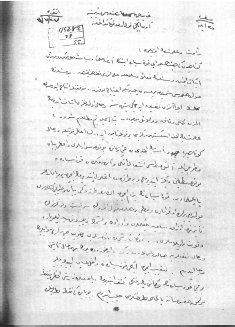

Mustafa Kemal Paşanın Refet Bey ile İsmet Beye yazısı. Millet Meclisi Raisi Mustafa Kemal Kuvve-i Seyyare meselesinin artık müzakere yoluyla halledilmesinin mümkün olmadığını, meselenin fiilen ve silahla çözümünün lüzumunu belirtiyor. (27-12-1921, Genel Kurmay Arşivi No: 1/4282)